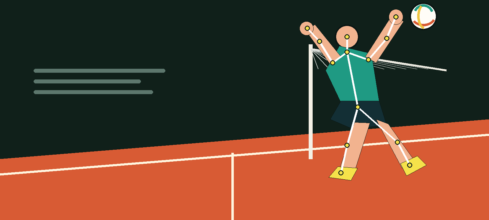

--
分數
等待分析
錄影或上傳影片後，AI 會先找出最值得修正的動作問題。
完成分析後會顯示優先修正方向、練習方法與教學影片。

OPEN-SOURCE 3D VOLLEYBALL COACH
錄下動作，AI 會分析身體骨架、手部關節與關鍵角度，直接指出下一個要修正的位置。
頁面可以部署到 GitHub Pages；分析 API 則使用固定的雲端網址，不再依賴臨時 tunnel。
可直接錄製 12 秒內的動作。錄完先回放確認，再送出分析。
目前分析 3D 身體骨架與手部關節，並保留球路、聲音及穿戴裝置擴充空間。
錄影或上傳影片後，AI 會先找出最值得修正的動作問題。